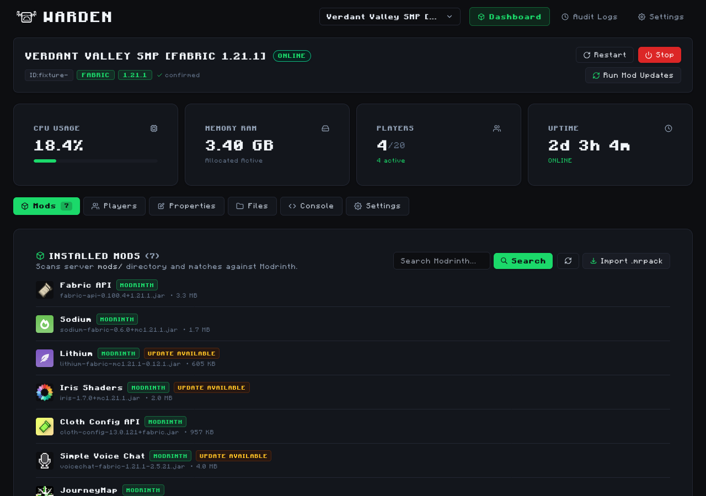
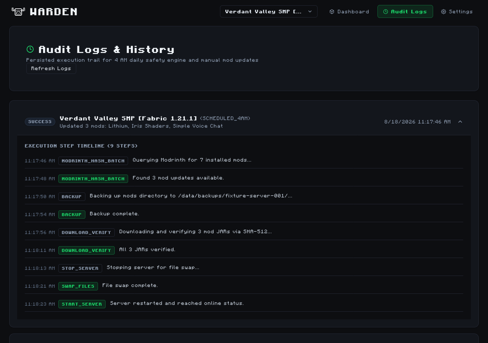
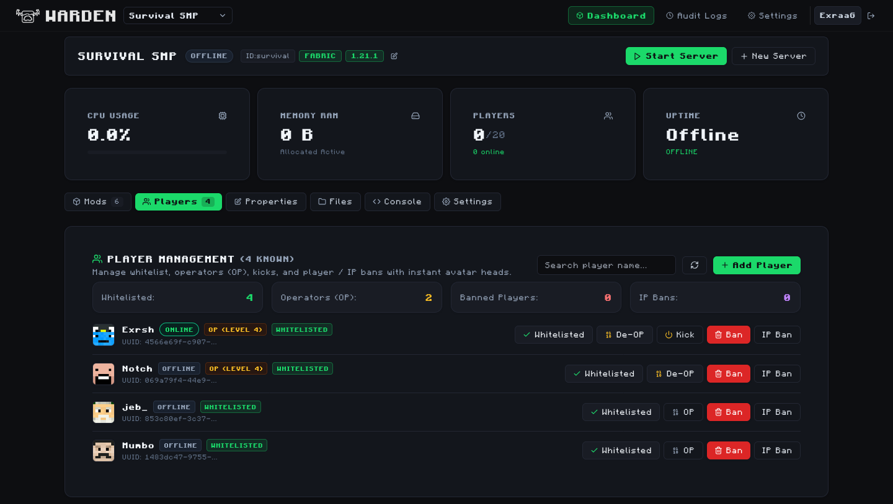
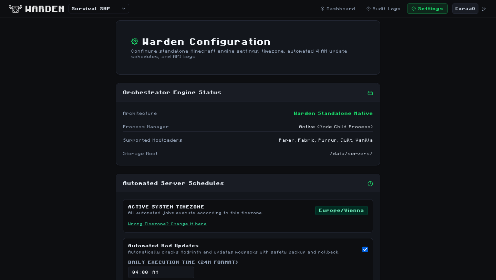

Warden Documentation
Warden is a modern, lightweight, 100% standalone Minecraft server manager, orchestrator, and automation engine. Built with Next.js 14, TypeScript, and a high-performance native Node.js process engine.
:22313 without any external dependencies, third-party panels, or separate daemon microservices.

Key Features
Architecture & Process Model
Warden utilizes a direct process management model. Each Minecraft server instance is executed as an isolated child process with managed I/O pipes (stdin, stdout, stderr).
Filesystem Storage Layout
/data
├── warden_storage.json # Master database: user accounts, 2FA, settings, cron jobs
├── backups/ # Automated pre-update backups & safety archives
│ └── survival-smp/
└── servers/ # Server root directory
├── survival-smp/
│ ├── warden.json # Server metadata, loader type, java version, memory allocation
│ ├── server.properties # Minecraft server configuration
│ ├── server.jar # Active server executable
│ ├── mods/ # Mod .jar files
│ ├── ops.json # Operator list & OP levels
│ ├── whitelist.json # Whitelisted players
│ └── usercache.json # Cached player UUIDs & usernames
└── creative-hub/Quickstart Installation
Deploy Warden in seconds using Docker Compose or directly on bare-metal Node.js.
1. Docker Compose (Recommended)
Create a docker-compose.yml file in your deployment directory:
version: '3.8'
services:
warden:
image: exraag/warden:latest
container_name: warden
restart: unless-stopped
ports:
- "22313:22313" # Warden Web GUI & REST API
- "25565-25575:25565-25575" # Minecraft Server Ports
environment:
- PORT=22313
- JWT_SECRET=change_this_to_a_secure_random_string_32_chars
- TZ=Europe/Vienna
volumes:
- ./data:/data
- /var/run/docker.sock:/var/run/docker.sock:roLaunch the container in detached mode:
docker compose up -d2. Bare Metal (Node.js & Linux / macOS / Windows)
# 1. Clone the repository
git clone https://github.com/ExraaG/Warden.git
cd Warden
# 2. Install workspace dependencies
npm install
# 3. Build server and web application
npm run build
# 4. Start the standalone server on :22313
PORT=22313 npm startSystem Requirements
- Node.js: v18.17.0 or v20+ LTS
- Java Runtimes: OpenJDK 17 LTS or OpenJDK 21 LTS (for Minecraft 1.20.5+)
- Memory: Minimum 1 GB RAM for Warden; + allocated RAM per Minecraft server (e.g. 4-8 GB)
- Operating System: Linux (Ubuntu, Debian, Fedora, Arch, Alpine), macOS, or Windows Server
Server Management
Warden provides native 1-click server creation for all major Minecraft modloaders and platforms:
Live Streaming Console
The Console tab provides real-time streaming output using WebSockets and Server-Sent Events with automatic color-coding of logs, timestamps, player chat, and server alerts.
Backups & 1-Click Zip Export
Export entire server instances as compressed .zip archives with a single click. When a server is online, Warden automatically executes save-all flush to prevent world corruption before archiving.
Mods & .mrpack Ecosystem
Warden integrates directly with the Modrinth v2 API, allowing seamless mod discovery, automated version matching, dependency resolution, and batch updates.
4:00 AM Automated Mod Update Engine
Warden features an automated daily safety engine that scans installed .jar files, computes SHA-512 checksums, queries Modrinth for compatible updates, and applies them safely.

Safety Engine Workflow
- DETECTION_CHECK: Confirms active modloader (Fabric/Paper/Purpur) and Minecraft version.
- MODRINTH_HASH_BATCH: Submits SHA-512 hashes via
POST /v2/version_files/update. - DOWNLOAD_VERIFY: Downloads updated JARs and verifies SHA-512 integrity prior to disk write.
- SAFETY BACKUP: Creates pre-update backup archive in
/data/backups/{serverId}/. - CLEAN RESTART: Stops server, swaps JARs, verifies directory, and restarts with automatic health check.
.mrpack Modpack Importer
Upload any Modrinth .mrpack file to preview dependencies, selective overrides, datapacks, and install full modpacks in one click.
Player Administration
Manage server access, operator permissions, and security directly from the dedicated Players tab.

Operator Privileges (OP Levels 1–4)
- Level 1 (Bypass Spawn): Bypass spawn protection coordinates.
- Level 2 (Commands): Use basic cheat commands (
/gamemode,/give,/tp) and command blocks. - Level 3 (Moderator): Manage players (
/kick,/ban,/op). - Level 4 (Administrator): Full server control, including
/stop,/save-all, and/reload.
Skin Avatar Rendering
Player avatars are rendered dynamically from official Minecraft usercache UUIDs and Mojang / Crafatar / MC-Heads skin pipelines without local image bloat.
Automation & Schedules
Keep your server healthy and performant with automated schedules for mod updates and daily restarts.

Timezone Auto-Detection & Manual Override
Warden automatically detects the server host's system timezone (e.g. Europe/Vienna) using Intl.DateTimeFormat. You can customize the active timezone anytime via "Wrong Timezone? Change it here" in Settings.
Security & Authentication
Two-Factor Authentication (TOTP 2FA)
Warden supports standard RFC 6238 TOTP two-factor authentication compatible with Google Authenticator, Aegis, 1Password, and Bitwarden.
Emergency Recovery Codes
Upon enabling 2FA, Warden generates 10 hashed, single-use emergency recovery keys formatted as XXXX-XXXX. These allow account recovery if your authenticator device is lost.
REST API Reference
Warden provides a full RESTful JSON API for automation, external dashboards, and mobile companion clients.
Authentication
All authenticated endpoints require a Bearer token in the Authorization header or the secure HTTP-only cookie set upon login:
Authorization: Bearer <YOUR_JWT_TOKEN>Core Endpoints
Returns an array of all configured servers, their loader, status, and telemetry.
{
"success": true,
"data": [
{
"id": "survival-smp",
"name": "Survival SMP",
"status": "online",
"detection": {
"loader": "fabric",
"mcVersion": "1.21.1",
"javaVersion": 17
},
"stats": {
"cpuPercent": 14.2,
"memoryBytes": 4080218931,
"maxMemoryBytes": 8589934592,
"onlinePlayers": 1,
"maxPlayers": 20,
"uptimeSeconds": 310942
}
}
]
}Send power actions: start, stop, restart, or kill.
{
"action": "restart"
}{
"success": true,
"data": {
"players": [
{
"name": "Exrsh",
"uuid": "4566e69f-c907-425b-80a1-8d29f8c6ebf8",
"isOnline": true,
"isWhitelisted": true,
"isOp": true,
"opLevel": 4,
"isBanned": false
}
],
"stats": {
"totalRecorded": 4,
"onlineCount": 1,
"whitelistedCount": 4,
"opsCount": 2,
"bannedCount": 0
}
}
}Supported actions: whitelist_add, whitelist_remove, op, deop, kick, ban, unban, ban_ip, unban_ip.
{
"name": "GamerTag",
"action": "op",
"opLevel": 4
}Android Companion Client
Warden features a native Android mobile application designed for remote server telemetry, push notifications, crash alerts, and on-the-go power control.